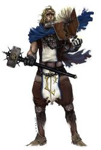

Joué par :
borador Joué par :
[ Information masquée ] Age : 17
Lieu de naisance : stormwind
Signe de naissance : lapin
Sexe : Homme
Race : Humain
Faction : Alliance
Formation : Paladin
Niveau : 60
Guilde : Artisanat 1 : Mineur
Artisanat 2 : Forgeron
Informations hrp : grand blond c est un garcon trés charmand mais aussi trés gentil qui a une foie en la lumiere inebranlable.Il est commandant de l'alliance et dirige la croisade contre les morts-vivants dans les maleterres de l'Ouest
Description : fils du generallisime bolvar fordragon, odarion a decidé de mener la croisade contre le fléau au nord avec son meilleur ami nain Reorx mais l'horreur qui les attendaient la-bas était pire que tout se qu'il pouvait immaginer.il a don naturelle pour la lumiere.il est en trés bonne relation avec son pére qui l adore mais son amour pour une jeune elfe nomé Rayanas est sujet de dispute avec son pére.
Quatrième Ère [1]
Lune de la Force
Décade du Panda
Décade du Gorille
Décade de l'Ours
Lune d'Agilité [1]
Décade du Tigre
Décade du Singe [1]
La chute d andorhal
Voila deux semaines qu'Andorhal a été reprise par le garnison de l'alliance commander par le commandant Odarion Fordragon, la bataille fut rude Odarion avait posté l armé a l'entré sud de la ville et lorsque le soleil se leva il chargea.Il reprit la ville mais a quel prix presque les trois quarts de son armée était anéanti.Il faisait un froid mortel les lames se geler dans le foureau,le détachement de Stormwind pour remplacer les soldats mort ne devait plus tarder et attendant Odarion se préparer tant bien que mal avec c est quelque soldat restant à renforcer les défenses d'Andorhal.
Toutes la journée les éclaireurs avaient rapportés du mouvement du coté de Caer Darrow se qui ne présager rien de bon.Les soldats étaient exténués, le nombre de combat qu ils avaient du mener contre cet enemi interrasable leur avaient depuis longtemps oter tout espoir mais la reconquéte d'Andorhal avaient ranimer en eux la flamme de l espoir et ils vouaient un respect et une confiance immense en leur commandant Odarion qui trouver toujours les bonnes paroles pour enflammer leur courage et leur donner la force de combattre.
A la tomber de la nuit, une épaisse brume tomba et donner une visibilité trés réduite.Odarion était en train de dormir dans sa tente il révait de l époque ou il était avec son pére s entrainant a maitriser l épée et la lumiére lorsque soudain son ami nain Reorx le réveilla:" Vite! réveille toi! nous sommes encerclés,Blackheart essay de reprendre la ville." a ces mots Odarion se leva d un bon,saisi son épée et sorti.L entré Nord et Est étaient submergé,Odarion ordonna a tou les soldats de garder l entré Nord et lui et Reorx prendrait l Est.Lorsqu il arriva devant la porte il le vis blackheart, le chevalier de la mort qui était a la téte des morts-vivants d'Andorhal qui venait reprendre la ville, il était deux rangs derriere avec son épée noir qui faisait presque deux fois sa taille, il portait une armure plus noir que le charbon et ses yeux brillait d un rouge écarlate derriére son casque.Reorx tapota le dos d'Odarion et dis:"Je crois mon ami que nous n'aurons plus le plaisir de boire ensemble.
_ je le crois aussi cher ami, répondis Odarion,allez jusqu'a la mort!"
Reorx fonca en trombe avec sa hache sur l abomination devant lui, quant à Odarion il chargea son épée de lumiére et commenca à engager le combat.Ils enchainaient tous les deux coups sur coups devant cette marée qui se déverser sur eux.Odarion le cherchait mais ne le trouver pas, lorsque soudain il entendit le cri de Reorx.Il se retourna tant bien que mal et vit son ami transpercer par la lame noir de Blackheart,fou de colére, il se jetta sur le chevalier de la mort.Celui-ci envoya sur Odarion une vague de mort qu'Odarion repoussa et ils commencérent a engager le combat a l'épée.Les coups qu'ils se donnaient faisaient vibrer le sol sous leur pieds les morts qui observaient autour ne s'approchaient pas puis face a un coup d une violence extréme Odarion fut désarmé et se retrouva a genou.Blackheart levait sa lame noir pour l'achever lorsque soudain Odarion alla figer son poing dans l armure de son enemi et fit exploser le feu sacré dans sa main qui le désintégra littéralement ainsi que la plupart des morts-vivant autour.Ce qu il venait de faire l avait considérablement affaibli et il récupéra son épée et se battit tant bien que mal.
Il n en pouvait plus c'était fini il allait mourrir alors il repensa soudain à elle celle qui lui avait fait découvrir un bonheur incommensurable,il aurait tant voulu lui dire a quel point il l'aimait avant de tomber mais la c était fini et alors qu'il commencait à baisser sa garde face a tout les coups de ses assaillants il entendit le cor de Stromwind et vit arriver derriere lui l'armée blanche envoyé pour l aider mais il était trop épuisé et s éffondra.Dans un derniére élant pour sauver sa vie il créa un bouclier divin et s évanouit.
A son réveille il était dans un lit à Southshore et elle était a coté de lui pleurant a chaude larme de bonheur de son réveille, il croyait qu il était dans un réve mais la réalité était la Andorhal était tomber et méme les forces venu de Stomrwind n avait peu la défendre, il était empli de joie de la voir mais il ressentait en lui une profonde tristesse à cause de ce qu'il venait d arriver.